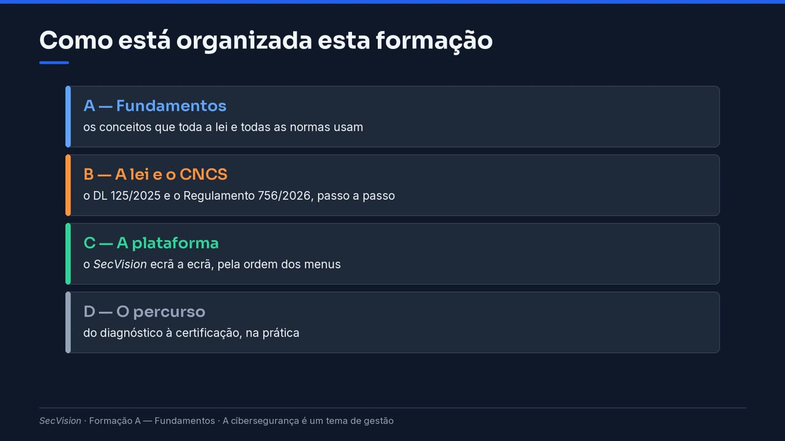

A cibersegurança é um tema de gestão
Porque é que a lei põe a direção a responder pela cibersegurança, o que isso muda numa organização pública, e como está organizada esta formação.
Bem-vindo à formação do SecVision. É para quem trabalha numa organização que passou a ter obrigações de cibersegurança — e que não é, nem tem de ser, especialista em informática, em segurança ou em direito. Vamos explicar tudo, desde o princípio.
Começamos por uma ideia que muda a forma de olhar para o tema: a cibersegurança deixou de ser um assunto só da informática. Passou a ser um assunto de gestão — e a lei diz isso por escrito.
O que mudou
Até há pouco tempo, a segurança informática era tratada pela informática, com os meios que houvesse. Raramente chegava à mesa da direção — a não ser depois de um incidente grave.
Com o Decreto-Lei cento e vinte e cinco de dois mil e vinte e cinco, que transpõe a diretiva europeia conhecida por NIS 2, e com o Regulamento setecentos e cinquenta e seis de dois mil e vinte e seis do Centro Nacional de Cibersegurança, isto mudou. A lei identifica quem está abrangido, define medidas obrigatórias, prazos, e sanções para quem não cumpre.
E diz expressamente que se aplica às instituições de ensino superior — como o Instituto Politécnico de Vila Nova, a organização que vai acompanhar toda esta formação.
Antes e depois da nova lei
Antes: a segurança era tratada pela informática, com os meios que houvesse, e raramente chegava à direção.
Agora: a lei identifica as entidades abrangidas, define medidas obrigatórias e prazos, e prevê sanções.
As instituições de ensino superior estão expressamente abrangidas (art. 3.º, n.º 6, do DL).
A lei portuguesa é o DL 125/2025, que transpõe a diretiva europeia NIS 2, e o Regulamento 756/2026 do CNCS.
Porque é que é um tema de gestão? Primeiro, porque a pergunta central — quanto risco aceitamos, e quanto investimos para o reduzir — é uma decisão de gestão. A informática pode dizer quanto custa; não deve ser ela a decidir se se paga.
Segundo, porque as medidas mexem com toda a organização: com as pessoas, com as compras, com os contratos de fornecedores, com as regras internas. Muitas delas nem são tecnológicas: são políticas, responsabilidades atribuídas, formação.
E terceiro, porque sem o apoio da direção, a informática não consegue impor regras ao resto da organização. Uma política de palavras-passe que a direção não assina é uma sugestão.
Porque é um tema de gestão
Decidir quanto risco se aceita, e quanto se investe para o reduzir, é uma decisão de gestão.
As medidas mexem com toda a organização: pessoas, compras, fornecedores, contratos, regras internas.
Muitas medidas são organizacionais ou humanas, não tecnológicas: políticas, responsabilidades, formação.
Sem apoio da direção, a informática não consegue impor regras ao resto da organização.
A direção na lei
O que pede a lei à direção? Para as entidades essenciais e importantes, o artigo vigésimo quinto é muito claro: os órgãos de gestão aprovam as medidas de gestão dos riscos, supervisionam a sua aplicação, e asseguram formação regular em cibersegurança.
E acrescenta duas coisas que pesam: os titulares desses órgãos podem responder pessoalmente, por ação ou omissão, com dolo ou culpa grave. E estas responsabilidades só se podem delegar num dos próprios titulares do órgão — não se passam para o técnico de informática.
Para as entidades públicas relevantes, como o nosso politécnico, a lei remete para as medidas que o CNCS estabelece no Regulamento, proporcionais ao grupo. E entre elas, no Grupo A, está por exemplo uma Política de Cibersegurança — que, naturalmente, é a direção que aprova.
O que a lei pede à direção
Tipo de entidade |
O que a lei diz |
Base legal |
|---|---|---|
Essenciais e importantes |
os órgãos de gestão aprovam as medidas de gestão dos riscos, supervisionam a sua aplicação e asseguram formação regular |
art. 25.º, n.º 1, do DL |
Essenciais e importantes |
os titulares podem responder por ação ou omissão, com dolo ou culpa grave |
art. 25.º, n.º 2, do DL |
Essenciais e importantes |
estas responsabilidades só se delegam num dos próprios titulares do órgão |
art. 25.º, n.º 3, do DL |
Públicas relevantes |
cumprem as medidas que o CNCS estabelece em regulamento, proporcionais ao grupo |
art. 33.º do DL |
Dica
Para as públicas relevantes do Grupo A, o Anexo IV do Regulamento inclui, por exemplo, uma Política de Cibersegurança (O.PSI) — que é a direção que aprova.
Um aviso importante, logo no início: a conformidade não é um projeto que se faz uma vez e se arruma. Não se compra nem se instala. É uma prática: tem responsáveis, registos, e revisões periódicas.
E o objetivo não é dizer que se está seguro. É poder demonstrar, a quem fiscaliza, três coisas: o que se decidiu, o que se fez, e o que ainda falta e porquê. Toda esta formação é sobre isso.
Importante
Não é um projeto, é uma prática
A conformidade não se compra nem se instala: vive-se, com responsáveis, registos e revisões.
Não acaba: as ameaças mudam, a organização muda, e a lei pede atualização permanente.
O que conta é poder demonstrar — a quem fiscaliza — o que se decidiu, o que se fez e o que falta.
O percurso
A formação tem quatro módulos. No primeiro, os fundamentos: os conceitos que toda a lei e todas as normas usam — risco, controlos, sistema de gestão. No segundo, a lei e o papel do CNCS, passo a passo.
No terceiro, a plataforma SecVision, ecrã a ecrã, pela ordem em que o trabalho se faz. E no quarto, o percurso completo: do primeiro diagnóstico até à certificação. Cada página diz também que informação tem de pedir, e a quem, dentro da sua organização.
Como está organizada esta formação
- A — Fundamentos
os conceitos que toda a lei e todas as normas usam
- B — A lei e o CNCS
o DL 125/2025 e o Regulamento 756/2026, passo a passo
- C — A plataforma
o SecVision ecrã a ecrã, pela ordem dos menus
- D — O percurso
do diagnóstico à certificação, na prática

Como está organizada esta formação.
Três perguntas para fazer já, na sua organização. À direção: quem patrocina este tema, e quem a representa nas decisões de cibersegurança. Ao serviço jurídico: se a entidade já foi qualificada pelo CNCS, e em que categoria. E à informática: quem trata hoje da segurança, e com que meios.
O que pedir a quem — já hoje
À direção: quem patrocina o tema, e quem a representa nas decisões de cibersegurança.
Ao serviço jurídico: se a entidade já foi qualificada pelo CNCS, e em que categoria.
À informática: quem trata hoje da segurança, e com que meios.